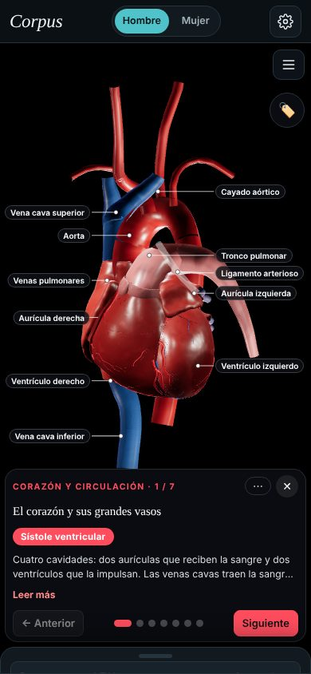
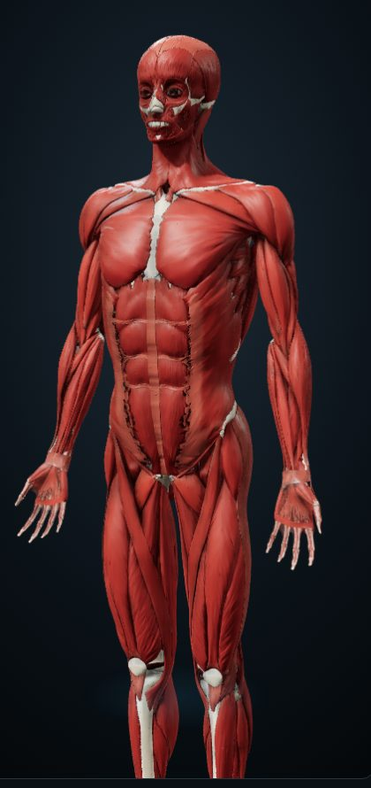
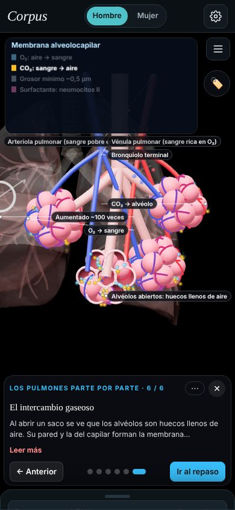
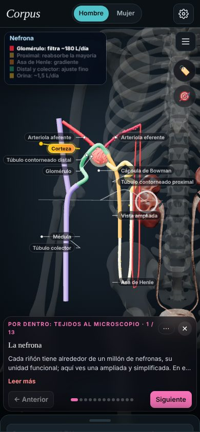

Recorridos narrados
Corazón, pulmones, nervios, articulaciones, marcha y dolor, paso a paso, con voz, subtítulos y modo vídeo.
Corpus es un atlas de anatomía en 3D, libre y gratuito, hecho para estudiantes de fisioterapia y medicina. Se abre en el navegador, sin cuenta y sin instalar nada.

Cada tema se explica sobre el modelo: la estructura se ilumina, se mueve y se nombra mientras lees o escuchas la narración.

Corazón, pulmones, nervios, articulaciones, marcha y dolor, paso a paso, con voz, subtítulos y modo vídeo.

Alvéolos, nefrona, sarcómero, disco, tendón, nervio o placa de ateroma: lo que no se ve a simple vista, en 3D.

Se ocultan los nombres y tocas cada estructura en el modelo. También hay casos clínicos y exámenes por región.
Cada recorrido tiene su propio enlace. Compártelo en clase o en el grupo del curso y se abre directamente en ese tema.